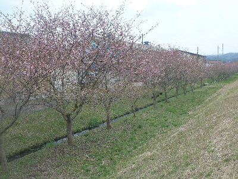
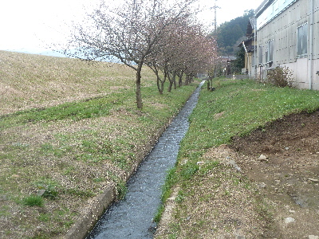
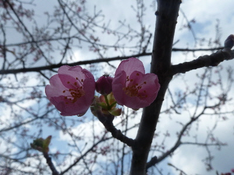
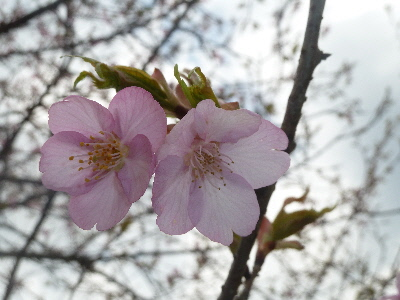
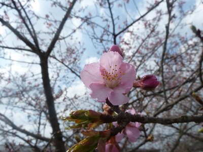

大東町春殖地区の赤川左岸の川津桜を見に行きました。
更新日 : 2018/03/24
東京とかで桜のニュースがやってて、花見に行きたいと思いおでかけしました。 ここの桜は新聞に毎年のように掲載されてて、一度行ってみたいと思っていました。

川の土手下に、きれいに一列に桜の木が植えられていました。

別アングルから見たらこんな感じ。建物近いな。ジロジロ見ないようにしましょう。

今日は3/24ですが、まだまだ咲きはじめです。
咲き始めは赤が強くて派手ですね。

開花するとピンク色です。葉っぱがもう出てますね。

満開になったらもっと綺麗だろうなー。